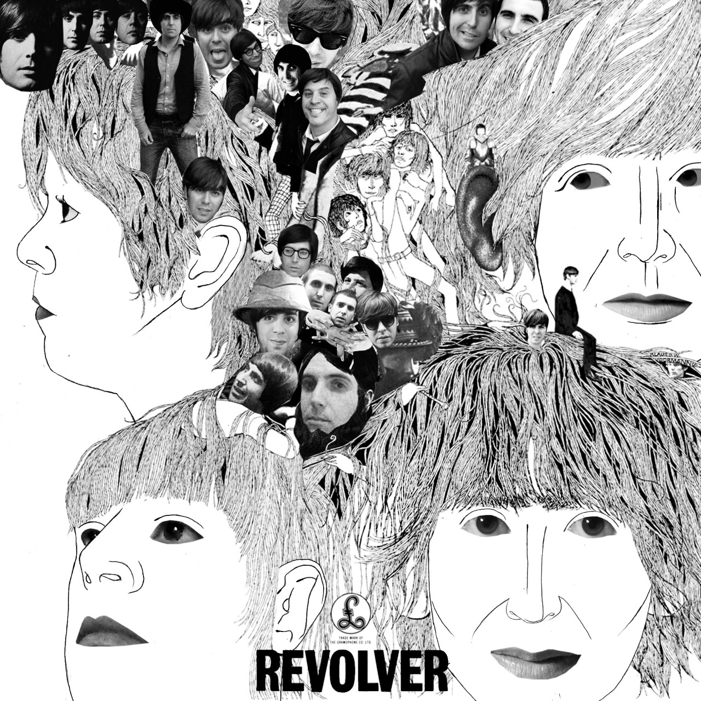

1963
Please Please Me

- «I Saw Her Standing There» Пол Маккартни 2:54
- «Misery» Джон Леннон и Пол Маккартни 1:50
- «Anna (Go to Him)» Джон Леннон 2:57
- «Chains» Джордж Харрисон 2:23
- «Boys» Ринго Старр 2:27
- «Ask Me Why» Джон Леннон 2:27
- «Please Please Me» Джон Леннон 1:59
- «Love Me Do» Пол Маккартни и Джон Леннон 2:18
- «P.S. I Love You» Пол Маккартни 2:05
- «Baby It’s You» Джон Леннон 2:38
- «Do You Want to Know a Secret?» Джордж Харрисон 1:59
- «A Taste of Honey» Пол Маккартни 2:05
- «There’s a Place» Джон Леннон и Пол Маккартни 1:52
- «Twist and Shout» Джон Леннон 2:32
With The Beatles

- «It Won’t Be Long» Леннон 2:09
- «All I’ve Got to Do» Леннон 2:03
- «All My Loving» Маккартни 2:06
- «Don’t Bother Me» Харрисон 2:24
- «Little Child» Леннон и Маккартни 1:46
- «Till There Was You» Маккартни 2:14
- «Please Mr. Postman» Леннон 2:34
- «Roll Over Beethoven» Харрисон 2:44
- «Hold Me Tight» Маккартни 2:32
- «You Really Got a Hold on Me» Леннон и Харрисон 2:59
- «I Wanna Be Your Man» Старр 1:58
- «Devil in Her Heart» Харрисон 2:26
- «Not a Second Time» Леннон 2:07
- «Money (That’s What I Want)» Леннон 2:50
1964


1965

1966

- Revolver Скачать
1967


1968
- The Beatles Скачать
1969


1970

- Let It Be Скачать